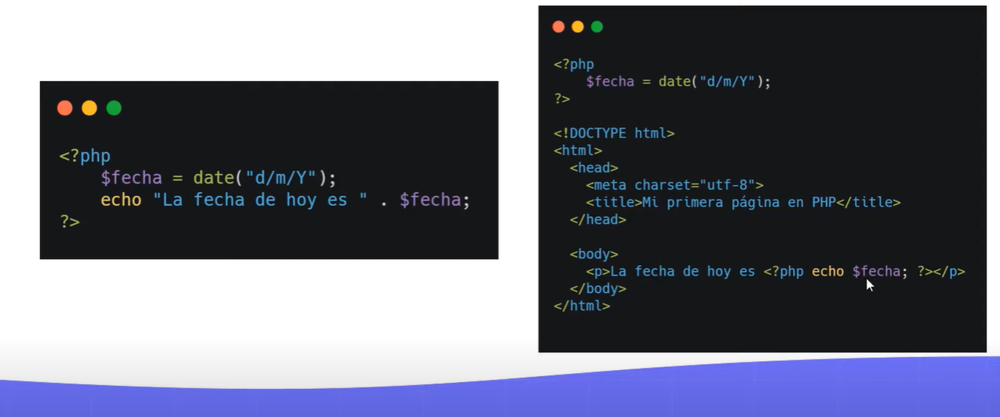
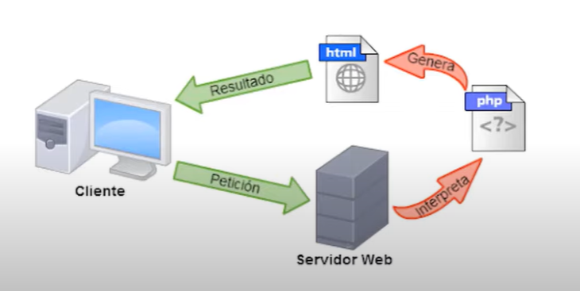
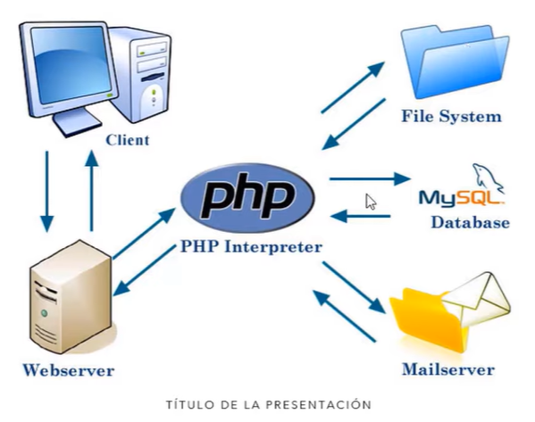

Puede haber codigo php embebido dentro de codigo HTML.
Cuando creamos una pagina con un archivo .php este archivo no puede ser enviado al cliente ya que los navegadores no cuentan con un interprete de php y no van a poder leer el archivo.
En su lugar el interprete se instala en el servidor web y este va a traducir los archivos php a archivos html justo cuando el cliente le hace la solicitud de cierta pagina.
Al utilizar XAMPP el interprete de php que hace este trabajo es Apache.
Con php se pueden hacer muchas cosas:
